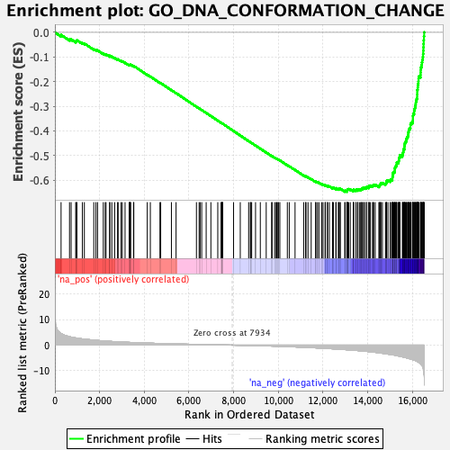

| | | Dataset | DE_genes2 |
| Phenotype | NoPhenotypeAvailable |
| Upregulated in class | na_neg |
| GeneSet | GO_DNA_CONFORMATION_CHANGE |
| Enrichment Score (ES) | -0.647288 |
| Normalized Enrichment Score (NES) | -2.1780205 |
| Nominal p-value | 0.0 |
| FDR q-value | 0.0 |
| FWER p-Value | 0.0 |
Table: GSEA Results Summary

Fig 1: Enrichment plot: GO_DNA_CONFORMATION_CHANGE
Profile of the Running ES Score & Positions of GeneSet Members on the Rank Ordered List
| PROBE | GENE SYMBOL | GENE_TITLE | RANK IN GENE LIST | RANK METRIC SCORE | RUNNING ES | CORE ENRICHMENT | | 1 | UBA52 | | | 276 | 4.536 | -0.0103 | No |
| 2 | CHMP1A | | | 654 | 3.296 | -0.0286 | No |
| 3 | CHTF8 | | | 727 | 3.153 | -0.0284 | No |
| 4 | UBC | | | 930 | 2.829 | -0.0367 | No |
| 5 | SOX9 | | | 959 | 2.783 | -0.0343 | No |
| 6 | SMARCAL1 | | | 986 | 2.753 | -0.0319 | No |
| 7 | SIRT6 | | | 1229 | 2.441 | -0.0432 | No |
| 8 | NAA60 | | | 1318 | 2.338 | -0.0452 | No |
| 9 | RECQL5 | | | 1740 | 1.959 | -0.0681 | No |
| 10 | CABIN1 | | | 1837 | 1.889 | -0.0712 | No |
| 11 | PHF23 | | | 1909 | 1.832 | -0.0729 | No |
| 12 | CHD8 | | | 2166 | 1.640 | -0.0862 | No |
| 13 | CENPT | | | 2253 | 1.586 | -0.0892 | No |
| 14 | BAHD1 | | | 2287 | 1.570 | -0.0889 | No |
| 15 | CHD4 | | | 2451 | 1.464 | -0.0968 | No |
| 16 | IGHMBP2 | | | 2453 | 1.464 | -0.0947 | No |
| 17 | RBX1 | | | 2546 | 1.415 | -0.0983 | No |
| 18 | AKAP8L | | | 2675 | 1.352 | -0.1041 | No |
| 19 | CDKN2A | | | 2805 | 1.282 | -0.1102 | No |
| 20 | CDAN1 | | | 2829 | 1.274 | -0.1097 | No |
| 21 | TREX1 | | | 2962 | 1.212 | -0.1160 | No |
| 22 | ABL1 | | | 3017 | 1.189 | -0.1176 | No |
| 23 | CHD3 | | | 3139 | 1.137 | -0.1234 | No |
| 24 | PHF13 | | | 3322 | 1.068 | -0.1330 | No |
| 25 | M1AP | | | 3343 | 1.061 | -0.1327 | No |
| 26 | DDX11 | | | 3360 | 1.054 | -0.1321 | No |
| 27 | RTEL1 | | | 3364 | 1.052 | -0.1307 | No |
| 28 | NAV2 | | | 3391 | 1.042 | -0.1308 | No |
| 29 | ERCC3 | | | 3523 | 0.997 | -0.1374 | No |
| 30 | DDB1 | | | 3530 | 0.996 | -0.1363 | No |
| 31 | PARP10 | | | 4133 | 0.799 | -0.1721 | No |
| 32 | ERCC2 | | | 4271 | 0.758 | -0.1793 | No |
| 33 | TSPY26P | | | 4700 | 0.637 | -0.2047 | No |
| 34 | CETN2 | | | 4734 | 0.629 | -0.2058 | No |
| 35 | TOP3B | | | 5214 | 0.515 | -0.2344 | No |
| 36 | DQX1 | | | 5422 | 0.465 | -0.2464 | No |
| 37 | PAF1 | | | 6333 | 0.280 | -0.3018 | No |
| 38 | TP53 | | | 6453 | 0.253 | -0.3087 | No |
| 39 | XRCC5 | | | 6499 | 0.246 | -0.3111 | No |
| 40 | CHD6 | | | 6569 | 0.230 | -0.3150 | No |
| 41 | TSPYL1 | | | 6769 | 0.190 | -0.3269 | No |
| 42 | DDB2 | | | 6980 | 0.159 | -0.3396 | No |
| 43 | UBB | | | 7288 | 0.099 | -0.3582 | No |
| 44 | CENPW | | | 7436 | 0.075 | -0.3672 | No |
| 45 | TSPYL4 | | | 7459 | 0.073 | -0.3684 | No |
| 46 | NAP1L4 | | | 7467 | 0.071 | -0.3687 | No |
| 47 | RNF8 | | | 7489 | 0.067 | -0.3699 | No |
| 48 | NCAPH2 | | | 7491 | 0.067 | -0.3699 | No |
| 49 | DFFB | | | 7510 | 0.063 | -0.3709 | No |
| 50 | SMYD3 | | | 7995 | -0.011 | -0.4005 | No |
| 51 | UBN1 | | | 8295 | -0.054 | -0.4188 | No |
| 52 | ANXA1 | | | 8670 | -0.124 | -0.4415 | No |
| 53 | TSSK6 | | | 8747 | -0.142 | -0.4460 | No |
| 54 | BRD2 | | | 8764 | -0.146 | -0.4468 | No |
| 55 | CENPV | | | 8805 | -0.152 | -0.4490 | No |
| 56 | NAP1L5 | | | 8978 | -0.188 | -0.4593 | No |
| 57 | GPER1 | | | 9192 | -0.237 | -0.4720 | No |
| 58 | XRCC6 | | | 9456 | -0.304 | -0.4877 | No |
| 59 | PSME4 | | | 9698 | -0.368 | -0.5019 | No |
| 60 | TOP3A | | | 9720 | -0.375 | -0.5026 | No |
| 61 | RUVBL2 | | | 9831 | -0.409 | -0.5088 | No |
| 62 | SYCP3 | | | 9898 | -0.427 | -0.5122 | No |
| 63 | SMARCA1 | | | 9926 | -0.436 | -0.5132 | No |
| 64 | CHD5 | | | 9979 | -0.455 | -0.5158 | No |
| 65 | NAA10 | | | 10004 | -0.462 | -0.5166 | No |
| 66 | GRWD1 | | | 10066 | -0.478 | -0.5196 | No |
| 67 | ACIN1 | | | 10401 | -0.587 | -0.5392 | No |
| 68 | ERCC6 | | | 10487 | -0.616 | -0.5435 | No |
| 69 | SRPK1 | | | 10746 | -0.707 | -0.5583 | No |
| 70 | NOC2L | | | 11132 | -0.853 | -0.5807 | No |
| 71 | SPTY2D1 | | | 11216 | -0.890 | -0.5845 | No |
| 72 | RPS27A | | | 11237 | -0.897 | -0.5844 | No |
| 73 | POLE3 | | | 11326 | -0.937 | -0.5884 | No |
| 74 | CHD2 | | | 11469 | -0.996 | -0.5957 | No |
| 75 | TSPYL2 | | | 11663 | -1.072 | -0.6059 | No |
| 76 | DHX9 | | | 11678 | -1.078 | -0.6052 | No |
| 77 | HIRA | | | 11750 | -1.109 | -0.6079 | No |
| 78 | TTN | | | 11813 | -1.138 | -0.6101 | No |
| 79 | BANF1 | | | 11943 | -1.194 | -0.6163 | No |
| 80 | TSPYL5 | | | 11999 | -1.220 | -0.6178 | No |
| 81 | AIFM1 | | | 12091 | -1.270 | -0.6216 | No |
| 82 | HMGA1 | | | 12102 | -1.273 | -0.6203 | No |
| 83 | RAD54L2 | | | 12191 | -1.322 | -0.6238 | No |
| 84 | RUVBL1 | | | 12197 | -1.323 | -0.6222 | No |
| 85 | MCPH1 | | | 12281 | -1.366 | -0.6253 | No |
| 86 | HELB | | | 12425 | -1.437 | -0.6319 | No |
| 87 | ERCC8 | | | 12429 | -1.440 | -0.6300 | No |
| 88 | SSBP1 | | | 12461 | -1.455 | -0.6298 | No |
| 89 | IPO4 | | | 12577 | -1.523 | -0.6346 | No |
| 90 | RFC2 | | | 12578 | -1.523 | -0.6324 | No |
| 91 | CENPL | | | 12686 | -1.583 | -0.6366 | No |
| 92 | KAT6B | | | 12697 | -1.587 | -0.6349 | No |
| 93 | CHAF1B | | | 12733 | -1.605 | -0.6347 | No |
| 94 | HMGA2 | | | 12776 | -1.631 | -0.6349 | No |
| 95 | CTCF | | | 12974 | -1.752 | -0.6445 | No |
| 96 | SUPV3L1 | | | 12981 | -1.755 | -0.6423 | No |
| 97 | GATAD1 | | | 13064 | -1.807 | -0.6447 | Yes |
| 98 | CENPP | | | 13066 | -1.809 | -0.6421 | Yes |
| 99 | RBBP4 | | | 13080 | -1.817 | -0.6402 | Yes |
| 100 | RAD23B | | | 13094 | -1.823 | -0.6384 | Yes |
| 101 | RPA1 | | | 13109 | -1.830 | -0.6365 | Yes |
| 102 | CENPM | | | 13147 | -1.858 | -0.6361 | Yes |
| 103 | GTF2F2 | | | 13218 | -1.900 | -0.6376 | Yes |
| 104 | HMGB3 | | | 13350 | -1.994 | -0.6427 | Yes |
| 105 | CENPO | | | 13365 | -2.007 | -0.6407 | Yes |
| 106 | CHTF18 | | | 13370 | -2.009 | -0.6380 | Yes |
| 107 | G3BP1 | | | 13474 | -2.084 | -0.6412 | Yes |
| 108 | PARP1 | | | 13479 | -2.088 | -0.6384 | Yes |
| 109 | GTF2H4 | | | 13553 | -2.134 | -0.6398 | Yes |
| 110 | GTF2H5 | | | 13554 | -2.134 | -0.6367 | Yes |
| 111 | SART3 | | | 13627 | -2.180 | -0.6379 | Yes |
| 112 | CUL4A | | | 13685 | -2.229 | -0.6382 | Yes |
| 113 | CHD7 | | | 13706 | -2.247 | -0.6361 | Yes |
| 114 | MNAT1 | | | 13731 | -2.265 | -0.6343 | Yes |
| 115 | MCM3 | | | 13783 | -2.315 | -0.6340 | Yes |
| 116 | NCAPD2 | | | 13788 | -2.321 | -0.6309 | Yes |
| 117 | MCM5 | | | 13861 | -2.378 | -0.6318 | Yes |
| 118 | AKAP8 | | | 13879 | -2.396 | -0.6294 | Yes |
| 119 | MCM7 | | | 13952 | -2.457 | -0.6302 | Yes |
| 120 | RFC5 | | | 13956 | -2.460 | -0.6268 | Yes |
| 121 | ASF1B | | | 14048 | -2.550 | -0.6286 | Yes |
| 122 | RBBP7 | | | 14053 | -2.553 | -0.6252 | Yes |
| 123 | RECQL4 | | | 14062 | -2.561 | -0.6219 | Yes |
| 124 | NCAPD3 | | | 14122 | -2.615 | -0.6217 | Yes |
| 125 | HHEX | | | 14217 | -2.707 | -0.6235 | Yes |
| 126 | HELQ | | | 14235 | -2.730 | -0.6206 | Yes |
| 127 | TOP1MT | | | 14265 | -2.752 | -0.6183 | Yes |
| 128 | NAP1L3 | | | 14334 | -2.815 | -0.6184 | Yes |
| 129 | ASCC3 | | | 14497 | -2.986 | -0.6240 | Yes |
| 130 | GTF2H2 | | | 14529 | -3.022 | -0.6215 | Yes |
| 131 | CENPU | | | 14542 | -3.039 | -0.6178 | Yes |
| 132 | CHAF1A | | | 14579 | -3.085 | -0.6155 | Yes |
| 133 | SETSIP | | | 14585 | -3.093 | -0.6113 | Yes |
| 134 | CUL4B | | | 14656 | -3.193 | -0.6109 | Yes |
| 135 | SET | | | 14793 | -3.350 | -0.6143 | Yes |
| 136 | HMGB1 | | | 14818 | -3.383 | -0.6109 | Yes |
| 137 | DDX1 | | | 14841 | -3.412 | -0.6072 | Yes |
| 138 | NAP1L1 | | | 14844 | -3.416 | -0.6024 | Yes |
| 139 | MCM4 | | | 14906 | -3.510 | -0.6010 | Yes |
| 140 | MCM2 | | | 15006 | -3.658 | -0.6017 | Yes |
| 141 | SHPRH | | | 15020 | -3.669 | -0.5972 | Yes |
| 142 | CENPN | | | 15099 | -3.785 | -0.5964 | Yes |
| 143 | ASH1L | | | 15102 | -3.788 | -0.5910 | Yes |
| 144 | MIS18A | | | 15108 | -3.798 | -0.5858 | Yes |
| 145 | XPA | | | 15115 | -3.801 | -0.5806 | Yes |
| 146 | CENPI | | | 15122 | -3.810 | -0.5754 | Yes |
| 147 | DDX3X | | | 15126 | -3.818 | -0.5700 | Yes |
| 148 | CHD1L | | | 15163 | -3.867 | -0.5666 | Yes |
| 149 | RAD54B | | | 15206 | -3.922 | -0.5634 | Yes |
| 150 | NAP1L2 | | | 15208 | -3.927 | -0.5577 | Yes |
| 151 | NIPBL | | | 15209 | -3.928 | -0.5520 | Yes |
| 152 | DDX12P | | | 15223 | -3.954 | -0.5470 | Yes |
| 153 | ITGB3BP | | | 15248 | -4.001 | -0.5427 | Yes |
| 154 | RAD51 | | | 15283 | -4.088 | -0.5388 | Yes |
| 155 | ANP32B | | | 15295 | -4.108 | -0.5335 | Yes |
| 156 | MCM8 | | | 15299 | -4.112 | -0.5276 | Yes |
| 157 | CHD9 | | | 15371 | -4.244 | -0.5258 | Yes |
| 158 | SETX | | | 15386 | -4.266 | -0.5204 | Yes |
| 159 | CDCA5 | | | 15393 | -4.273 | -0.5146 | Yes |
| 160 | NPM1 | | | 15396 | -4.274 | -0.5084 | Yes |
| 161 | RAD54L | | | 15435 | -4.365 | -0.5044 | Yes |
| 162 | DNA2 | | | 15436 | -4.365 | -0.4980 | Yes |
| 163 | POT1 | | | 15549 | -4.580 | -0.4982 | Yes |
| 164 | GINS1 | | | 15564 | -4.619 | -0.4923 | Yes |
| 165 | HP1BP3 | | | 15579 | -4.656 | -0.4864 | Yes |
| 166 | GTF2H1 | | | 15594 | -4.686 | -0.4804 | Yes |
| 167 | ATRX | | | 15599 | -4.719 | -0.4738 | Yes |
| 168 | CCNB1 | | | 15643 | -4.796 | -0.4694 | Yes |
| 169 | ASF1A | | | 15644 | -4.797 | -0.4624 | Yes |
| 170 | CENPC | | | 15651 | -4.807 | -0.4557 | Yes |
| 171 | OIP5 | | | 15659 | -4.836 | -0.4491 | Yes |
| 172 | GINS4 | | | 15688 | -4.879 | -0.4437 | Yes |
| 173 | HNRNPA2B1 | | | 15720 | -4.948 | -0.4384 | Yes |
| 174 | BLM | | | 15728 | -4.957 | -0.4316 | Yes |
| 175 | MTERF1 | | | 15756 | -5.018 | -0.4259 | Yes |
| 176 | NASP | | | 15792 | -5.106 | -0.4206 | Yes |
| 177 | RFC4 | | | 15807 | -5.149 | -0.4139 | Yes |
| 178 | CDK1 | | | 15810 | -5.156 | -0.4065 | Yes |
| 179 | MCM6 | | | 15829 | -5.218 | -0.4000 | Yes |
| 180 | NCAPH | | | 15843 | -5.247 | -0.3932 | Yes |
| 181 | TOP1 | | | 15882 | -5.336 | -0.3877 | Yes |
| 182 | SMARCA5 | | | 15909 | -5.412 | -0.3814 | Yes |
| 183 | KAT6A | | | 15910 | -5.415 | -0.3735 | Yes |
| 184 | HELLS | | | 15936 | -5.474 | -0.3670 | Yes |
| 185 | TPR | | | 16001 | -5.664 | -0.3627 | Yes |
| 186 | PIF1 | | | 16018 | -5.727 | -0.3553 | Yes |
| 187 | RFC3 | | | 16020 | -5.728 | -0.3470 | Yes |
| 188 | NBN | | | 16021 | -5.731 | -0.3386 | Yes |
| 189 | RSF1 | | | 16033 | -5.770 | -0.3309 | Yes |
| 190 | WRN | | | 16074 | -5.884 | -0.3248 | Yes |
| 191 | PURA | | | 16076 | -5.891 | -0.3162 | Yes |
| 192 | HAT1 | | | 16101 | -5.959 | -0.3090 | Yes |
| 193 | RECQL | | | 16118 | -5.999 | -0.3012 | Yes |
| 194 | GTF2H3 | | | 16136 | -6.070 | -0.2934 | Yes |
| 195 | SMCHD1 | | | 16149 | -6.113 | -0.2852 | Yes |
| 196 | ERCC6L | | | 16159 | -6.148 | -0.2768 | Yes |
| 197 | NCAPG2 | | | 16188 | -6.289 | -0.2693 | Yes |
| 198 | HJURP | | | 16210 | -6.380 | -0.2613 | Yes |
| 199 | CENPH | | | 16211 | -6.387 | -0.2520 | Yes |
| 200 | GINS2 | | | 16213 | -6.392 | -0.2427 | Yes |
| 201 | CENPQ | | | 16214 | -6.395 | -0.2334 | Yes |
| 202 | MIS18BP1 | | | 16234 | -6.494 | -0.2250 | Yes |
| 203 | XPC | | | 16239 | -6.505 | -0.2158 | Yes |
| 204 | DHX36 | | | 16255 | -6.577 | -0.2071 | Yes |
| 205 | ZRANB3 | | | 16266 | -6.660 | -0.1980 | Yes |
| 206 | CDC45 | | | 16272 | -6.693 | -0.1885 | Yes |
| 207 | SMARCAD1 | | | 16278 | -6.759 | -0.1790 | Yes |
| 208 | DSCC1 | | | 16359 | -7.253 | -0.1733 | Yes |
| 209 | CHD1 | | | 16364 | -7.335 | -0.1628 | Yes |
| 210 | BRIP1 | | | 16369 | -7.368 | -0.1523 | Yes |
| 211 | NUSAP1 | | | 16374 | -7.420 | -0.1417 | Yes |
| 212 | RAD50 | | | 16404 | -7.792 | -0.1321 | Yes |
| 213 | SMC4 | | | 16421 | -7.981 | -0.1215 | Yes |
| 214 | CENPA | | | 16438 | -8.139 | -0.1106 | Yes |
| 215 | SMC2 | | | 16464 | -8.568 | -0.0996 | Yes |
| 216 | TOP2B | | | 16475 | -8.798 | -0.0874 | Yes |
| 217 | CENPK | | | 16485 | -9.298 | -0.0743 | Yes |
| 218 | POLQ | | | 16490 | -9.648 | -0.0605 | Yes |
| 219 | TOP2A | | | 16497 | -9.873 | -0.0465 | Yes |
| 220 | NCAPG | | | 16504 | -10.079 | -0.0321 | Yes |
| 221 | MCM9 | | | 16513 | -11.241 | -0.0162 | Yes |
| 222 | HMGB2 | | | 16525 | -11.801 | 0.0004 | Yes |
Table: GSEA details [plain text format]
Fig 2: GO_DNA_CONFORMATION_CHANGE: Random ES distribution
Gene set null distribution of ES for GO_DNA_CONFORMATION_CHANGE